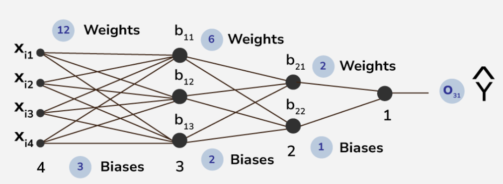
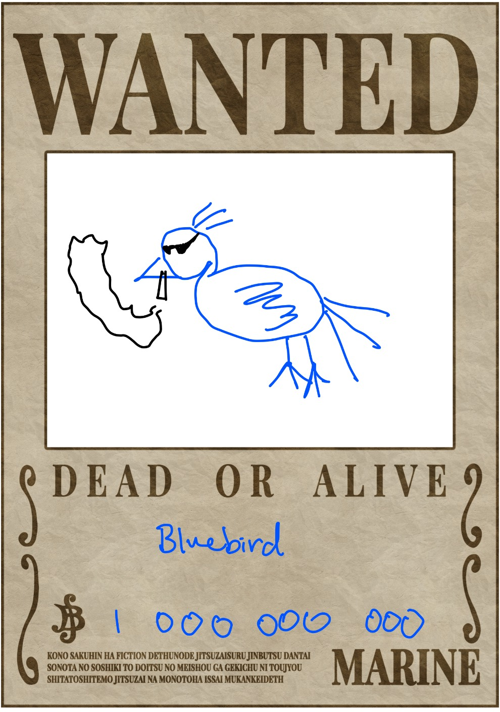
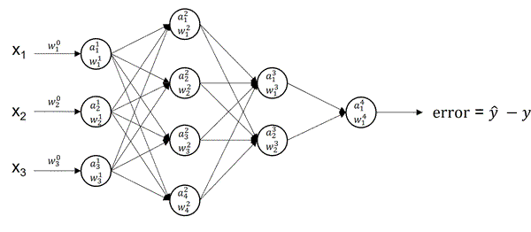
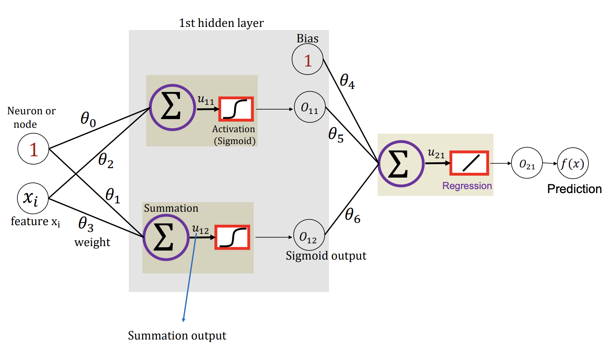
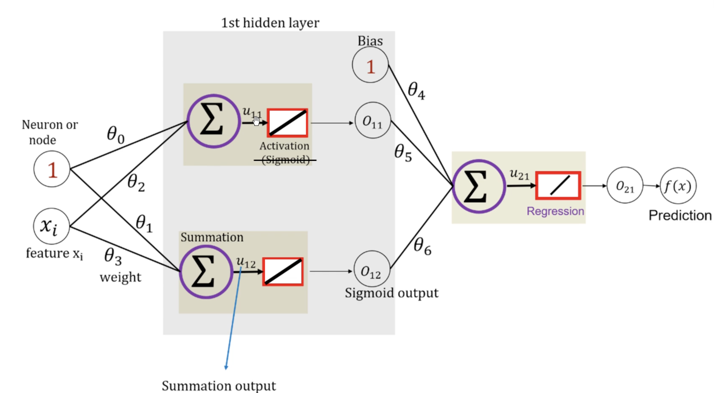
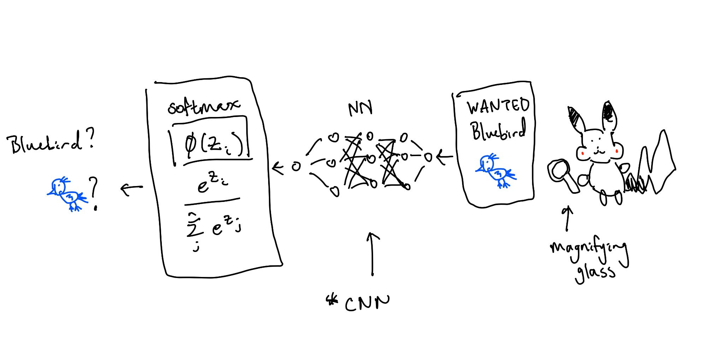

The FBB (federal bureau of birds) posted large reward for the criminal Bluebird. Pikachu is looking through a large database pictures of birds in hopes of cashing in. Image by image, Pikachu gets more and more tired. "I know!" I'll come up with a model to find Bluebird while I sleep. And thus, Neural Networks was born.

Before we define what a neural network is, we need to understand the components of it.
We can break it down into layers and neurons.
So what is a neuron?
Similar to the brain, a neuron is a component of the overarching network.
Imagine a large supply chain working together to produce a finished good.
Different parts of the supply chain are optimized to produce inividual goods that result in a finished product.
A neuron acts like a factory or one node in the supply chain.
Like a factory, it takes in inputs, produces outputs.
$$\phi (y = \sum W x_i + b_i) $$
An activation function, $\phi$, acts like a gate or knob to tweak the neuron output. Open the gate more = stronger. Close the gate more = weaker. This introduces nonlinearity that makes NN work (see nitty-gritty details below).
There are a LOT of hyperparameters associated with NNs. Here are some associated with the layers:
Since we have so many paramters, it is very easy to overfit NNs. Read up on regularization for linear regression to learn some methods we can use to control overfitting. Another way is Dropout: where random neurons get deactivated to prevent system overreliance on that neuron.
1. Initialize initial parameters (these are like natural resources)
While not converged:

In real life, instead of using While not converge we use the following hyperparameters:

One crucial parameter is our weights denoted by $\theta$. $\theta$ should never start at 0. Why? Because then chaining layers will always result in 0s (from the multiplication). Here you might also ask what do we pass in? Well, it depends on the problem you are trying to solve. At the end of the day, we pass in features, $x_i$, or datapoints, represented by numberical values. If you were trying to fit a line, $x$ could be a bunch of line values. You could even map words into numbers and pass them in (LLMs). Here, Pikachu might want to transform an image of Bluebird into pixel values.
In this step, we calculate the $u$'s (linear regression output) and $o$'s (output after activation function). Each neuron produces $u$ but we have to apply regulation $o$.

Going back to the original example:
$$
\begin{aligned}
u_{11} &= \theta_0 + \theta_2 x_i \\
o_{11} = o(u_{11}) &= \frac{1}{1 + e^{-u_{11}}} \\
u_{12} &= \theta_1 + \theta_3 x_i \\
o_{12} = o(u_{12}) &= \frac{1}{1 + e^{-u_{12}}} \\
u_{21} &= \theta_4 + \theta_5 o_{11} + \theta_6 o_{12} \\
o_{21} &= u_{21} = f(x) \\
f(x) &= \theta_4 + \theta_5 \cdot \frac{1}{1 + \exp (-[\theta_0 + \theta_2 x_i])} + \theta_6 \cdot \frac{1}{1 + \exp (-[\theta_1 + \theta_3 x_i])}
\end{aligned}
$$
But what does this mean?
$$
\begin{aligned}
\theta_4 &= \text{vertical translation} \\
\theta_5, \theta_6 &= \text{stretch or squeeze} \\
\theta_0, \theta_1, \theta_2, \theta_3 &= \text{horizontal translation} \\
\end{aligned}
$$
Notice that by adding some nonlinearity, we can start to model complex functions.
More and more of these layers mean more complexity where each layer is specialized at different things.
Okay. Now we got our output. We need to go backwards and optimize our $\theta$ weights.
How did we do this before? Gradient descent (step 4)!
$$
\theta_{new} = \theta_{old} - \alpha \nabla E_{\theta_i}(\theta)
$$
Now we have to calculate the gradients for every input and then optimize them all later.
This means we will need a $\nabla E_{\theta_i}(\theta)$ matrix representing all the errors from our layers
and perform gradient descent on it.
Explicity, we want to find the error given by each weight $\frac{\partial E}{\partial \theta_i}$
which tells us how much did this $\theta_i$ influence our error.
Before this, we have to calculate our loss function (assume we use MSE) to even use $\nabla E(\theta)$.
Since we only have one datapoint here, MSE simplifies:
$$
\begin{aligned}
L(\theta) = E(\theta) &= \frac{1}{N} \sum_i^N (y - \hat{y})^2 \\
E(\theta) &= (y - \hat{y})^2 \qquad \text{one data point at the end}\\
E(\theta) &= \frac{1}{2} (y - \hat{y})^2 \quad \ \text{multiply by constant doesn't change result (easier opt)} \\
\nabla E_{\theta}(\theta) &= -(y - f(x)) \frac{\partial f(x)}{\partial \theta}, \quad \text{$f(x) = \hat{y}$}\\
\end{aligned}
$$
Note that since we found $f(x)$ already in the forward pass and are given label $y$, we can treat the first term like a constant.
$$
\begin{aligned}
\nabla E_{\theta}(\theta) &= \Delta \frac{\partial f(x)}{\partial \theta}, \quad \text{$\Delta = -(y - f(x))$}
\end{aligned}
$$
Since we are calculating with repect to $\theta$, we need to do find the derivative for each $\theta_i$.
Recall $f(x) = o_{21} = u_{21} = \theta_4 + \theta_5 o_{11} + \theta_6 o_{12}$.
Hidden layer output:
$$
\begin{aligned}
\nabla E_{\theta_4} (\theta) &= \Delta \cdot 1 = \Delta \\
\nabla E_{\theta_5} (\theta) &= \Delta \cdot o_{11} \\
\nabla E_{\theta_6} (\theta) &= \Delta \cdot o_{12}
\end{aligned}
$$
Hidden layer input:
$$
\begin{aligned}
\nabla E_{\theta_3} (\theta) = \frac{\partial f(x)}{\partial o_{12}} \cdot \frac{\partial o_{12}}{\partial u_{12}} \cdot \frac{\partial u_{12}}{\partial \theta_{3}}
&= a \cdot b \cdot c \\
&= \theta_6 \cdot b \cdot x_i \\
o_{12} &= [1 + \exp(-u)] ^ {-1} \\
\frac{\partial o_{12}}{\partial \theta_3} = b &= -1 \cdot -1 \cdot (1 + \exp (-u))^{-2} \cdot \exp (-u) \\
b &= \frac{\exp (-u)}{[1 + \exp (-u)]^2} = \frac{1 + \exp (-u) - 1}{[1 + \exp (-u)]^2} \\
b &= \frac{1}{1 + \exp (-u)} \left[ \frac{1 + \exp (-u)}{1 + \exp(-u)} - \frac{1}{1 + \exp(-u)} \right] \\
b &= o_{12} [1 - o_{12}] \qquad \qquad \text{This form can be applied to all of the others!!} \\\\
\nabla E_{\theta_3} (\theta) &= \Delta \cdot \theta_6 \cdot o_{12} [1 - o_{12}] \cdot x_i \\
\nabla E_{\theta_2} (\theta) &= \Delta \cdot \theta_5 \cdot o_{11}[1 - o_{11}] \cdot x_i \\
\nabla E_{\theta_1} (\theta) &= \Delta \cdot \theta_6 \cdot o_{12}[1 - o_{12}] \\
\nabla E_{\theta_0} (\theta) &= \Delta \cdot \theta_5 \cdot o_{11}[1 - o_{11}] \\
\end{aligned}
$$
Gradients:
$$
\nabla E(\theta)
=
\begin{bmatrix}
\frac{\partial E}{\partial \theta_0} \\[4pt]
\frac{\partial E}{\partial \theta_1} \\[4pt]
\frac{\partial E}{\partial \theta_2} \\[4pt]
\frac{\partial E}{\partial \theta_3} \\[4pt]
\frac{\partial E}{\partial \theta_4} \\[4pt]
\frac{\partial E}{\partial \theta_5} \\[4pt]
\frac{\partial E}{\partial \theta_6}
\end{bmatrix}
=
\begin{bmatrix}
\Delta \cdot \,\theta_5\,o_{11}(1-o_{11}) \\
\Delta \cdot \,\theta_6\,o_{12}(1-o_{12}) \\
\Delta \cdot \,\theta_5\,o_{11}(1-o_{11})\,x_i \\
\Delta \cdot \,\theta_6\,o_{12}(1-o_{12})\,x_i \\
\Delta \\
\Delta \cdot \,o_{11} \\
\Delta \cdot \,o_{12}
\end{bmatrix}
$$
$$
\Delta = -(y - f(x))
$$

Now, we can do gradient descent normally: $$ \theta_{new} = \theta_{old} - \alpha \nabla E(\theta) $$ Then we can check if $\theta_{new} - \theta_{old} < \text{threshold}$ to break out.
So how can Pikachu find Bluebird? Well, he will have to do the following:
We would typically use *CNN (Convolutional Nerual Networks) architecture for this task so the model can learn useful features from images. CNNs have things like pooling and convolutions (sliding kernels) to detect spatial features and build feature maps. Under the hood, CNN is just another NN built specifically for images (might cover in the future).

{kind=link}